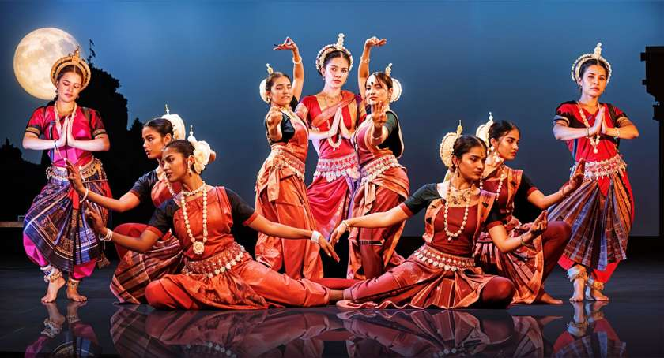
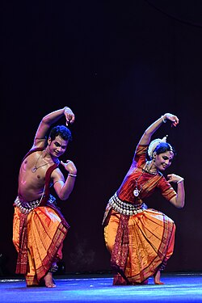
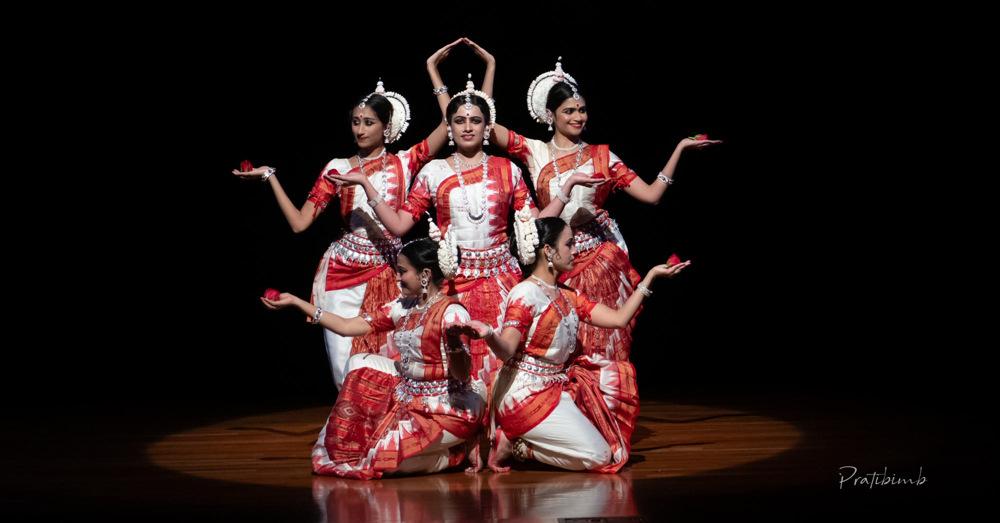

Tha kite gadhigana thei. Tha. This is how one begins their journey into the world of power and grace coming together as the dance they will come to know, Odissi. Today you will be diving into the world of this dance, of Odissi, exploring the dance’s origin and evolution, cultural impact, unique features, and the wonderful experiences it gives to its dancers.
Originating in the 1st century BCE, and remaining as elegant and preserved to this day, Odissi dance has come a long way through time and generations alike. It remains one-of-a-kind with its variation in music and dance styles. Building strong links between its learners and generations, between its past, and its present, Odissi was, is, and will be celebrated globally for its grace, emotional depth, and cultural richness that it brings to the world.